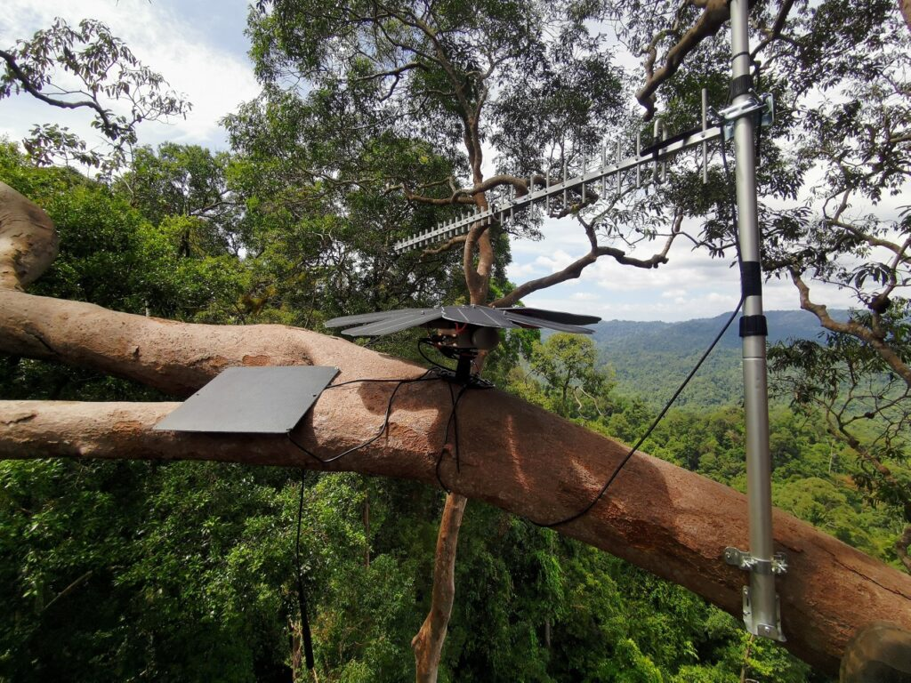

guardian platform
Our Guardian Platform enables the protection of forests and wildlife from illegal activities, like illegal logging and poaching. Part of this system is the Guardian device, a solar-powered acoustic streaming device that is placed high in tree-top canopies.
overview
The RFCx Guardian device’s primary purpose is to constantly gather data on the surrounding environment for processing and storage.
When connected via GSM, the Guardian device uploads a continuous recording of the surrounding environment’s soundscape, transmitting the audio in real-time to the cloud for instant analysis. When the Guardian is connected via Satellite, on-board analysis of audio is performed and alerts are transmitted in real-time.
The data-powered Guardian Platform uses artificial intelligence (AI) and machine learning to deliver rapid insight into what’s happening in vast forest ecosystems, identify potentially harmful behavior, and help on-the-ground rangers pinpoint and stop damaging activities as they occur.

technical specifications
Guardians feature a highly sensitive external microphone that captures all ambient sound within a radius of 50 m to 1,500 m depending on the source of the sound.
A specialized configuration of solar panels (designed to capitalize on the thin and short-lived bands of sunlight that penetrate tree canopies), on-board power management and LFP battery packs provide power to the Guardians.

In addition to GSM and Wi-Fi, the device also comes built-in with Satellite connectivity which enables the device to run onboard audio analysis and transmit alerts in real-time.
- IP66 Weatherproof Enclosure
- Mic Sensitivity: -22dB (1 kHz at 1Pa)
- Mic Frequency response: 50–18,000Hz
- Dual-Core ARM Cortex CPU
- ARM Mali GPU
- 512MB DDR RAM
- 128 GB Micro SD Storage expandable to 1TB
- Wi-Fi, Bluetooth, GPS
-
GSM: 850/900/1800/1900 / WCDMA:
B1/B2/B5/B8 / TD-CDMA / CDMA2000
- Built-in satellite communications (SWARM)
- On-board Accelerometer to prevent tampering
- Solar Panel Array capable of generating up to 30W of power
- Two on-board battery with over 50WH of storage capacity
- Custom Power board to manage battery charging and power delivery
- Custom designed frame to hold solar panel array and protect guardian enclosure from elements
- Custom designed aluminum ARM to facilitate mounting of the Guardian